Exploring the Impact of Marketing Strategies Through Data Science: A Deep Dive into EDA and A/B Testing
In the dynamic world of marketing, understanding customer behavior and optimizing strategies is paramount for success. As data scientists, we play a crucial role in extracting actionable insights from vast datasets. In this blog post, we will explore how exploratory data analysis (EDA) and A/B testing can be employed to enhance marketing campaigns, using a real-world marketing dataset.
Understanding the Dataset
Our dataset, collected from a marketing campaign, comprises various attributes, including user demographics, marketing channels, and conversion outcomes. The initial steps in our analysis involve loading and preprocessing the data to ensure its integrity and suitability for analysis
Exploring the Impact of Marketing Strategies Through Data Science: A Deep Dive into EDA and A/B Testing
import numpy as npimport pandas as pdimport matplotlib.pyplot as pltfrom scipy import stats # for AB testing# Load the datasetmarketing = pd.read_csv("data/marketing.csv")print(marketing.head(5))
user_id date_served marketing_channel variant converted \
0 a100000029 1/1/18 House Ads personalization True
1 a100000030 1/1/18 House Ads personalization True
2 a100000031 1/1/18 House Ads personalization True
3 a100000032 1/1/18 House Ads personalization True
4 a100000033 1/1/18 House Ads personalization True
language_displayed language_preferred age_group date_subscribed \
0 English English 0-18 years 1/1/18
1 English English 19-24 years 1/1/18
2 English English 24-30 years 1/1/18
3 English English 30-36 years 1/1/18
4 English English 36-45 years 1/1/18
date_canceled subscribing_channel is_retained
0 NaN House Ads True
1 NaN House Ads True
2 NaN House Ads True
3 NaN House Ads True
4 NaN House Ads True
To facilitate our analysis, we map categorical marketing channels to numeric values. This transformation enables more efficient computations and visualizations.
# Mapping channels to numeric valueschannel_dict = {"House Ads": 1, "Instagram": 2,"Facebook": 3, "Email": 4, "Push": 5}# Map the channel to channel codemarketing['channel_code'] = marketing['subscribing_channel'].map(channel_dict)
Performing Exploratory Data Analysis (EDA)
EDA is a critical step in understanding our data. By calculating key marketing metrics such as total users, retention rates, and conversion rates, we can assess the effectiveness of different marketing channels.
To automate the EDA process, we create a function to calculate conversion rates based on user segments. This function allows us to quickly assess the performance of different marketing strategies.
def conversion_rate(dataframe, column_names):#total number of converted users column_conv = dataframe[dataframe['converted']==True].groupby(column_names)['user_id'].nunique()#total number of users column_total= dataframe.groupby(column_names)['user_id'].nunique()#conversion rate conversion_rate = column_conv/column_total#fill missing values with zero conversion_rate = conversion_rate.fillna(0)return conversion_rate
Using this function, we can calculate conversion rates by age group and visualize the results to identify trends in user engagement.
# calculate conversion rate by age groupage_group_conv = conversion_rate(marketing, ['date_served', 'age_group'])#unstack and create a dataframeage_group_df = pd.DataFrame(age_group_conv.unstack(level =1))#visualize conversion by age groupage_group_df.plot()
<Axes: xlabel='date_served'>
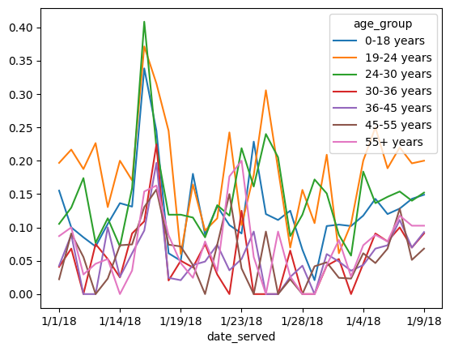
# a function that should produce plot based on grouping based on one columndef plotting_conv(dataframe):for column in dataframe:# Plot column by dataframe's index plt.plot(dataframe.index, dataframe[column]) plt.title('Daily '+str(column) +' Conversion Rate', size=16) plt.xlabel('Date', size=14)# Set x-axis labels to vertical plt.xticks(rotation=90)# Show plot plt.show() plt.clf()
#calculate conversion rate by dateserved and age groupage_group_conv = conversion_rate(marketing, ['date_served', 'age_group'])#unstakc age_group_conv and craete a dataframeage_group_df = pd.DataFrame(age_group_conv.unstack(level=1))#plot the resultsplotting_conv(age_group_df)
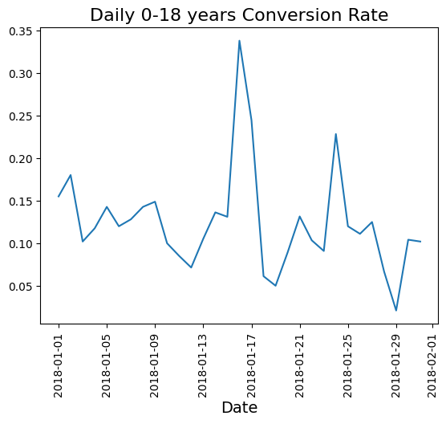
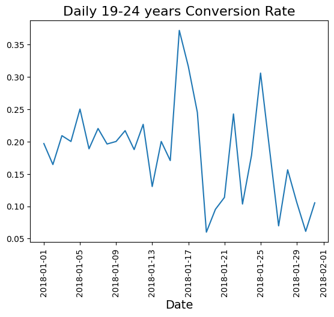
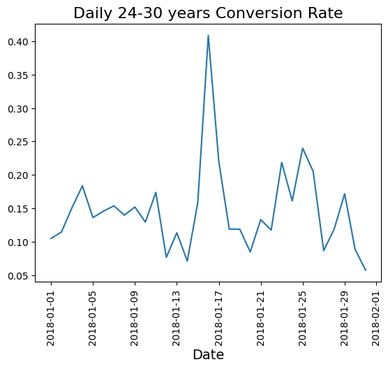
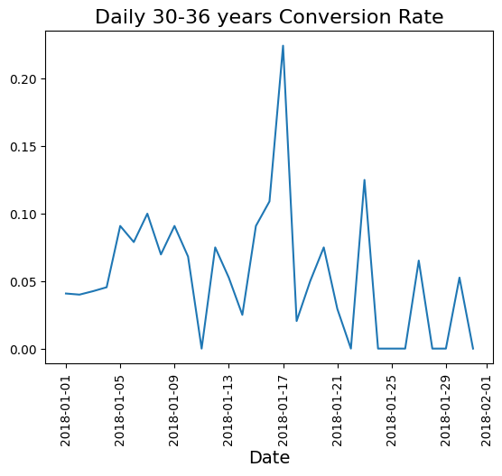
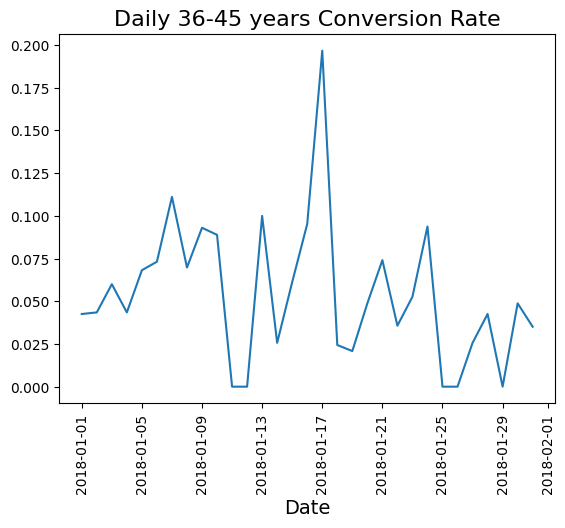
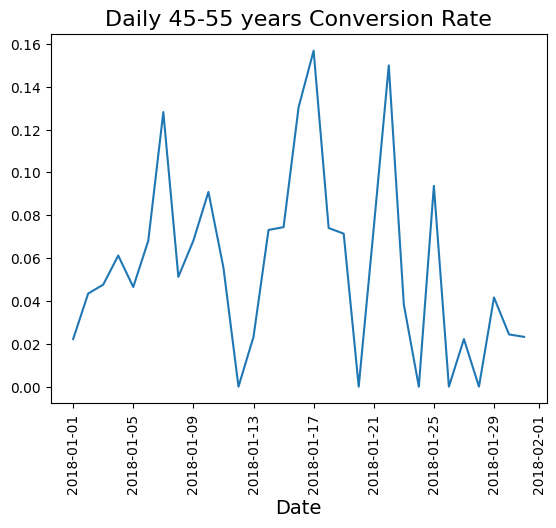
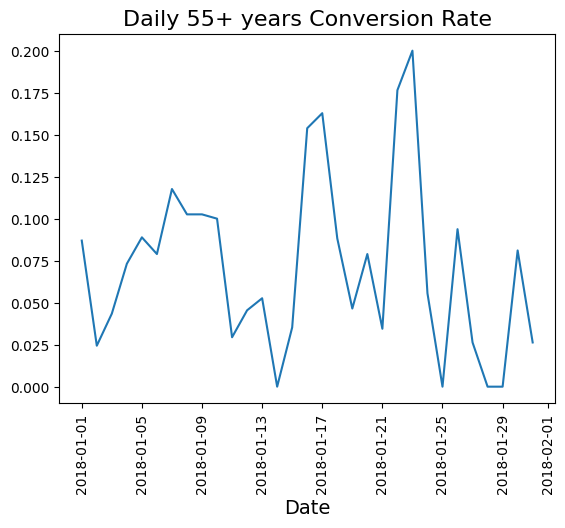
<Figure size 640x480 with 0 Axes>
Analyzing the Impact of the Day of the Week
Understanding temporal patterns in marketing effectiveness can provide valuable insights. We examine whether the day of the week affects conversion rates, especially for House Ads, which often see varying performance based on timing.
#calculate conversion rate by date_served and channeldaily_conv_channel = conversion_rate(marketing, ['date_served', 'marketing_channel'])print(daily_conv_channel)
#add day of week column to marketingmarketing['date_served'] = pd.to_datetime(marketing['date_served'])marketing['DoW_served'] = marketing['date_served'].dt.dayofweek#calculate conversion rate by day of weekDoW_conversion = conversion_rate(marketing, ['DoW_served', 'marketing_channel'])#unstack channelsDoW_df = pd.DataFrame(DoW_conversion.unstack(level =1))#plot conversion rate by day of weekDoW_df.plot()plt.title('Conversion rate by day of week')plt.ylim(0)plt.show()
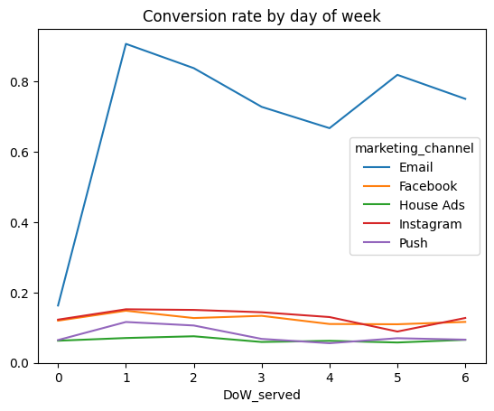
Segmenting Users for Deeper Insights
To better understand how language preferences impact conversion, we segment our data by the displayed language and examine conversion rates.
#Isolate hte rows where marking channel is house adshouse_ads = marketing[marketing['marketing_channel']=='House Ads']#calculate the conversion by date served and language displayedconv_lang_channel = conversion_rate(house_ads, ['date_served', 'language_displayed'])#unstack conv_lang_channelconv_lang_df = pd.DataFrame(conv_lang_channel.unstack(level=1))#use plotting fucntions to display resultsplotting_conv(conv_lang_df)
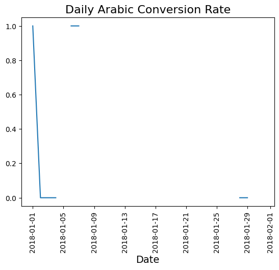
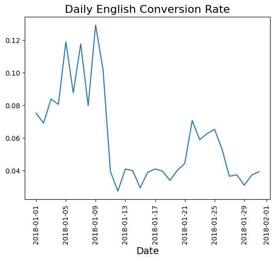
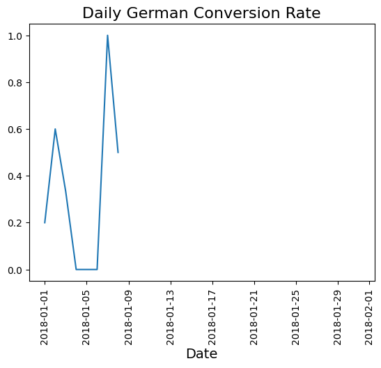
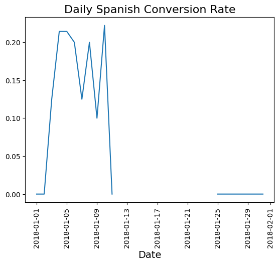
<Figure size 640x480 with 0 Axes>
We can also assess whether users received messages in their preferred language, revealing further insights into potential barriers to conversion.
# Add the new column for language correctnesshouse_ads['is_correct_lang'] = np.where(house_ads['language_preferred'] == house_ads['language_displayed'], 'Yes', 'No')# Group by date served and language correctnesslanguage_check = house_ads.groupby(['date_served', 'is_correct_lang'])['is_correct_lang'].count()language_check_df = pd.DataFrame(language_check.unstack(level=1)).fillna(0)# Print results and calculate percentage of correct languagelanguage_check_df['pct'] = language_check_df['Yes'] / language_check_df.sum(axis=1)# Plot resultsplt.plot(language_check_df.index.values, language_check_df['pct'])plt.title('Correct Language Display Rate Over Time')plt.xlabel('Date')# Set x-axis labels to verticalplt.xticks(rotation=90)plt.ylabel('Percentage')plt.show()
/var/folders/43/hk5fpcsd4gl7mt5ggvb968g80000gn/T/ipykernel_57718/92776872.py:2: SettingWithCopyWarning:
A value is trying to be set on a copy of a slice from a DataFrame.
Try using .loc[row_indexer,col_indexer] = value instead
See the caveats in the documentation: https://pandas.pydata.org/pandas-docs/stable/user_guide/indexing.html#returning-a-view-versus-a-copy
house_ads['is_correct_lang'] = np.where(house_ads['language_preferred'] == house_ads['language_displayed'], 'Yes', 'No')
Setting up conversion indexes
#calcualte pre_error conversion ratehouse_ads_bug = house_ads[house_ads['date_served'] <'2018-01-11']lang_conv = conversion_rate(house_ads_bug, ['language_displayed'])#Index other language conversion rate against Englishspanish_index = lang_conv['Spanish']/lang_conv['English']arabic_index = lang_conv['Arabic']/lang_conv['English']german_index = lang_conv['German']/lang_conv['English']print("Spanish index:", spanish_index)print("Arabic index:", arabic_index)print("German index:", german_index)
Spanish index: 1.681924882629108
Arabic index: 5.045774647887324
German index: 4.485133020344287
#Group house_ads by date and languageconverted = house_ads.groupby(['date_served', 'language_preferred']).agg({'user_id': 'nunique', 'converted': 'sum'})#unstacked converetedconverted_df = pd.DataFrame(converted.unstack(level =1))
# Create English conversion rate column for affected periodconverted_df['english_conv_rate'] = converted_df.loc['2018-01-11':'2018-01-31'][('converted','English')]/converted_df.loc['2018-01-11':'2018-01-31'][('user_id','English')]# Create expected conversion rates for each languageconverted_df['expected_spanish_rate'] = converted_df['english_conv_rate']*spanish_indexconverted_df['expected_arabic_rate'] = converted_df['english_conv_rate']*arabic_indexconverted_df['expected_german_rate'] = converted_df['english_conv_rate']*german_index# Multiply number of users by the expected conversion rateconverted_df['expected_spanish_conv'] = converted_df['expected_spanish_rate']/100*converted_df[('user_id','Spanish')]converted_df['expected_arabic_conv'] = converted_df['expected_arabic_rate']/100*converted_df[('user_id','Arabic')]converted_df['expected_german_conv'] = converted_df['expected_german_rate']/100*converted_df[('user_id','German')]
# use .loc to slice only the relevant datesconverted = converted_df.loc['2018-01-11':'2018-01-31']#sum expect subscribers for each languageexpected_subs = converted['expected_spanish_conv'].sum() + converted['expected_arabic_conv'].sum() + converted['expected_german_conv'].sum()#calculate how many subscribers we actually gotactual_subs = converted[('converted', 'Spanish')].sum() + converted[('converted', 'Arabic')].sum() + converted[('converted', 'German')].sum()
#substract how many subscribers we got despite the buglost_subs = expected_subs - actual_subsprint(lost_subs)
-25.495425075261792
A/B Testing: Evaluating Email Campaigns
To assess the effectiveness of our marketing strategies, we conduct an A/B test on our email campaigns. By segmenting our users into control and personalization groups, we can evaluate which approach yields better conversion rates.
# Subset the DataFrame for email marketingemail = marketing[marketing['marketing_channel'] =='Email']# Group the email DataFrame by variantalloc = email.groupby(['variant'])['user_id'].nunique()# Plot test allocationalloc.plot(kind='bar')plt.title('Email Personalization Test Allocation')plt.ylabel('# Participants')plt.show()# Group marketing by user_id and variantsubscribers = email.groupby(['user_id', 'variant'])['converted'].max()subscribers_df = pd.DataFrame(subscribers.unstack(level=1))# Calculate conversion ratescontrol = subscribers_df['control'].dropna()personalization = subscribers_df['personalization'].dropna()print('Control conversion rate:', np.mean(control))print('Personalization conversion rate:', np.mean(personalization))
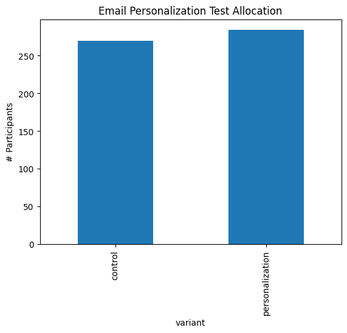
Control conversion rate: 0.2814814814814815
Personalization conversion rate: 0.3908450704225352
To evaluate the effectiveness of personalization, we define a function to calculate the lift in conversion rates between the two groups.
def lift(a,b):# Calcuate the mean of a and b a_mean = np.mean(a) b_mean = np.mean(b)# Calculate the lift using a_mean and b_mean lift = (b_mean-a_mean)/a_meanreturnstr(round(lift*100, 2)) +'%'# Print lift() with control and personalization as inputsprint(lift(control, personalization))
38.85%
Segmenting for Targeted Insights in A/B Testing
Finally, we can perform segmented A/B testing based on various user demographics, such as language displayed and age group, allowing us to uncover nuanced insights into user behavior.
def ab_segmentation(segment):for subsegment in np.unique(marketing[segment].values):print(f'Segment: {subsegment}') email = marketing[(marketing['marketing_channel'] =='Email') & (marketing[segment] == subsegment)] email.loc[:, 'converted'] = pd.to_numeric(email['converted'], errors='coerce') subscribers = email.groupby(['user_id', 'variant'])['converted'].max() subscribers = pd.DataFrame(subscribers.unstack(level=1)) control = pd.to_numeric(subscribers['control'], errors='coerce').dropna() personalization = pd.to_numeric(subscribers['personalization'], errors='coerce').dropna()iflen(control) >0andlen(personalization) >0:print('Lift:', lift(control, personalization))print('T-statistic:', stats.ttest_ind(control, personalization), '\n\n')else:print('Not enough data to perform t-test for', subsegment)# Segmenting based on language displayed and age groupab_segmentation('language_displayed')ab_segmentation('age_group')
/opt/anaconda3/envs/data-science/lib/python3.12/site-packages/scipy/stats/_axis_nan_policy.py:573: RuntimeWarning: Precision loss occurred in moment calculation due to catastrophic cancellation. This occurs when the data are nearly identical. Results may be unreliable.
res = hypotest_fun_out(*samples, **kwds)
Conclusion
Through EDA and A/B testing, data scientists can derive meaningful insights from marketing datasets, informing strategic decisions and optimizing marketing campaigns. By leveraging data analysis, we empower organizations to better understand their audiences and enhance their marketing efforts. This comprehensive approach not only drives engagement but also boosts conversion rates, ultimately leading to a more effective marketing strategy.
In an era where data is king, the role of the data scientist is not just to analyze data but to transform insights into actionable strategies that propel businesses forward.